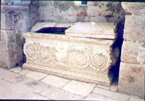

The Ransacking of Myra
While the whole Christian East glorified St.
Nicholas, his native Lycia was undergoing great and unpredictable changes.
Having had its heyday in the first centuries of the Christian era, it was now
subjected to one disaster after another. Muslim fleets ravaged the coast during
the seventh, eighth and ninth centuries. In 808, the commander of Haroun al
Rischid’s forces came ashore at the Lycian capital after devastating Rhodes.
Then, for about a hundred and fifty years, the Arab
pirates who had settled in Crete were the terror of all the seaboard lands
until, in 961, the island was once more taken by Constantinople. In 1034, the
Muslims again occupied Myra, but only for a short time. The administrator of
the province, who had himself been cured at the tomb of St. Nicholas, then had
a new wall built around the town, but after the decisive victory of the Turks
over the Byzantines in 1071, Asia Minor underwent a further period of
desolation. The Turks advanced to the west coast and the nearby islands.
Lycians were killed and their country laid waste. Myra, in such an exposed
position and so easy of access, was in the gravest danger. The inhabitants fled
to hide in the mountains, and the church containing St. Nicholas’ relics
probably had much to suffer at that time.
The memory of these disasters is preserved for us in several stories of miracles dating from this time. One legend pertains to a priest from Mytilene who went to Myra for the Saint’s Feast Day. The Cretan Arabs captured him and were going to cut off his head. St. Nicholas appeared (the priest alone saw him) and struck the sword from the executioner’s hand. The priest was set free.
In another legend, there was a guard, Petros, who
fell into the hands of the Arabs and was taken to Samara to be given up to the
caliph who lived there. This he saw as a punishment from Heaven, for he had
promised God that he would become a monk, and had broken his promise. He called
upon St. Nicholas, promising to renounce the world if he succeeded in escaping,
but St. Nicholas’ prayers could not obtain Petros’ deliverance, so he advised
him to pray also to St. Simeon the Just. St. Simeon set him free after he had
sworn to fulfill his promise, and Petros set off for Rome. St. Nicholas appeared
to the pope and told him of his protégé’s sufferings. The pope recognized
Petros in St. Peter’s, and called to him and consecrated him to God.
Lycia had again, and now for good, fallen into the
hands of pagan enemies. It was the time during which the Turks in Asia Minor
gained a lasting victory over the Byzantines (1080 to 1090). The country was
overrun by the foe and most of the population was killed. Myra, the old port
whose great days were long forgotten anyway, was largely deserted. Although the
city itself had not been actually taken by the Turks, many of the townspeople
had fled to the mountains.
The patronage of St. Nicholas over sailors and
fishermen, and the legends of his feats in their safety and rescue, made the
Saint a popular figure among Bari’s sailors and merchants; they had come to
regard him as one of theirs. In a fascinating and daring enterprise, the
residents of Bari (Italy) – where Nicholas’ popularity had grown with the years
– hatched a plot to recover the remains of the Saint from Turkey.
Sixty persons embarked in three ships, viz.:
forty-seven inhabitants of Bari (among whom were two priests and a cleric, the
others being merchants and armed sailors), a pilgrim and twelve foreign
passengers. The ships were on their voyage to Antioch with cargoes of wheat for
which they were to receive in return the products of the East for the merchants
of Bari. On the voyage, they met eleven other vessels whose crews, like their
own, had resolved on carrying off the relics of St. Nicholas.
Devotion to St. Nicholas was known in the West long before his relics were brought to Italy, but this happening naturally greatly increased his veneration among the people, and miracles were as freely attributed to his intercession in Europe as they had been in Asia.
This story seems to be closely connected with the
development of veneration of St. Nicholas in western Europe following the
removal of his relics to Bari, Italy. General veneration of the Saint, long
popular in the East, seems to increase in the West after that event. The
particular incident just recorded is followed in Wace by these words:
Devant ceo ne trovons pas
qui si servist saint Nicholas,
which may be translated, “Before this we do not find
worshippers of Saint Nicholas,” and seem to indicate that the composition of
Wace was connected in some way with a newly instituted church festival.
The accounts are unanimous that St. Nicholas died
and was buried in his episcopal city of Myra, and by the time of Justinian
there was a basilica built in his honour at Constantinople. When Myra and its
great shrine finally passed into the hands of the Saracens, several Italian
cities saw this as an opportunity to acquire the relics of St. Nicholas for
themselves. There was great competition for them between Venice and Bari. The
last-named won, and their Muslim masters, and on May 9, 1087 were safely landed
at Bari, a not inappropriate home seeing that Apulia in those days still had
large Greek colonies. A new church was built to shelter them and Pope Urban II
was present at their enshrining. Devotion to St. Nicholas was known in the West
long before his relics were brought to Italy, but this happening naturally
greatly increased his veneration among thepeople, and miracles were as freely
attributed to his intercession in Europe as they had been in Asia.
Thought to Ponder:
Thought to Discuss around the Dinner Table:
The Ransacking of Myra
